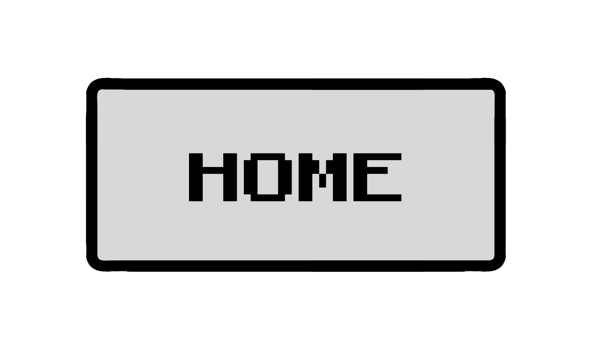
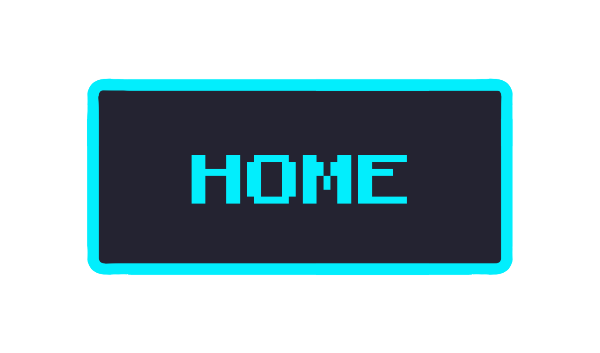
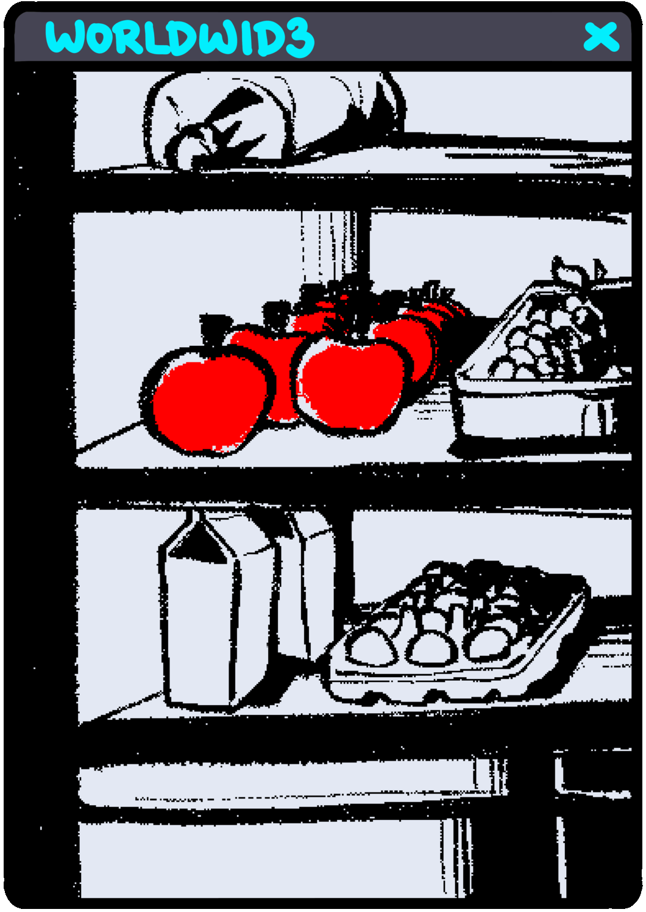
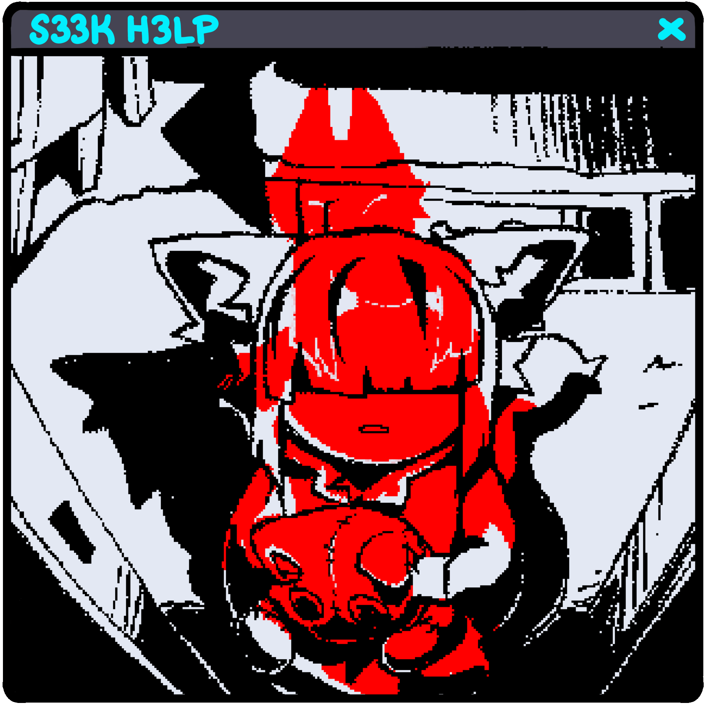
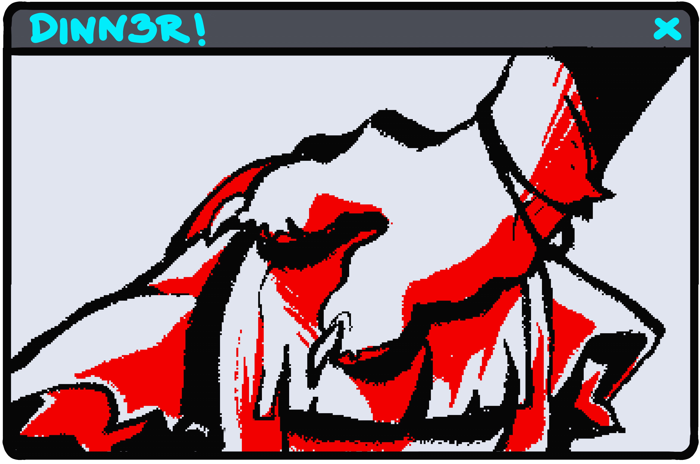
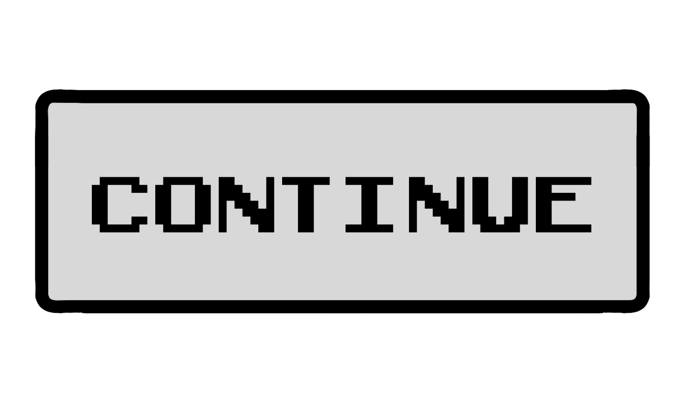
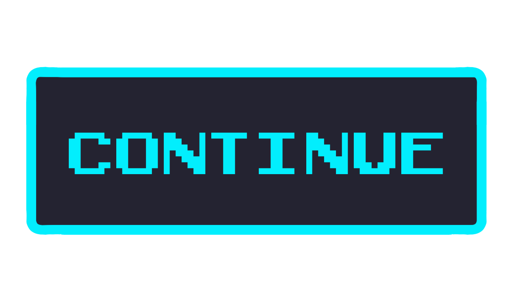
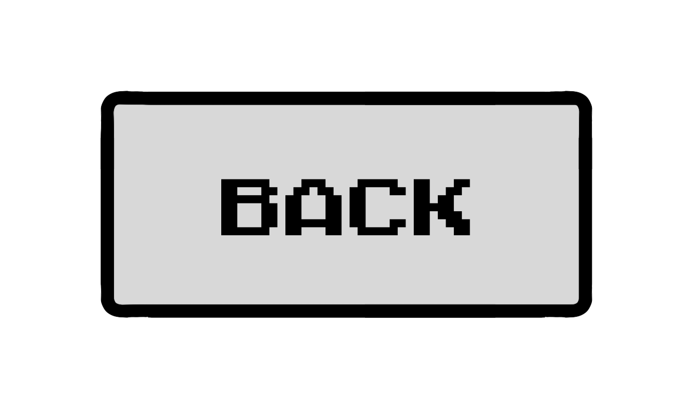
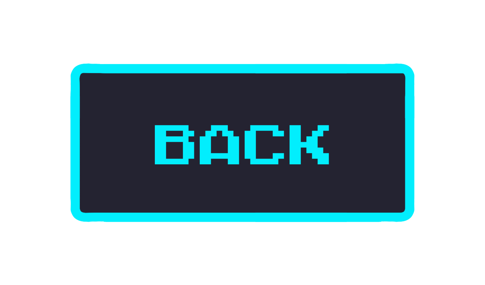

The apples looked perfectly aligned in the fridge. Eleven of them in total, six in one row, five in the other. They always bought the red ones. They only ever liked the red ones.
Three light knocks sounded on Cat’s bedroom door. Sheets rustled as it climbed out of bed. The hallway lights flooded the room causing Cat to squint. Looking up, it was met with the practiced smile of its mother.

Her voice was soft, like how one would expect a mother to speak to a child. But Cat couldn't quite put its finger on what was wrong with it.
“Yes.” Cat answered quietly.
Its claws fiddled with the hem of its shorts, tearing more holes into it.
“You know why I’m here?” If it were anyone else, Cat might’ve been fooled by her voice. But this was Mother.
“....Yes.” Its eyes had gotten used to the brightness of the hallway lights, now shifting around nervously. An image of the eleven apples flashed in Cat’s mind.
Mother’s paw came down to pet Cat’s head, nails carding through its hair.
Cat repeated what it had been told hundreds of times before.
“So, why did you take the apple?” Mother’s nails continued carding through Cat’s hair rhythmically.
“I took it because I was too impatient to wait for Mom to cook dinner.” Cat replied, its voice scripted.
“And? What will you do about it?” She brushed hair out of Cat’s eyes.
“I will replace the apple as soon as possible.”
“Good, you’re learning.” She smiled, retracting her hand. “I’ll be cooking dinner for your father and I. Go back to sleep.”
Cat nodded, eyes downcast, as its bedroom door clicked softly closed. It stood there in silence for a moment before climbing back in bed, and burrowing under the blankets.
The smell of beef taunted Cat from beneath its now closed doorway…




